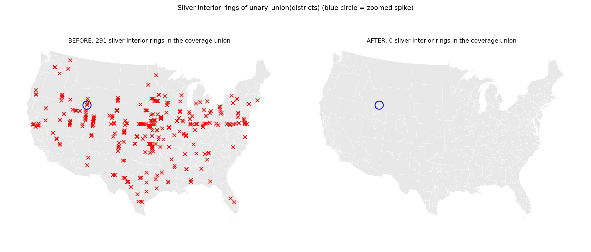
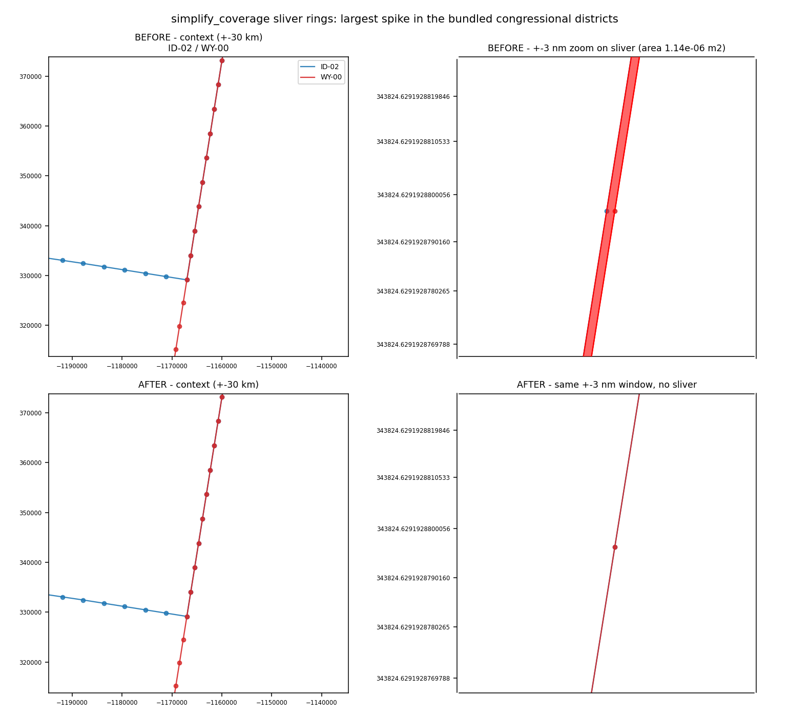

shapely.segmentize interpolated shared edges asymmetrically between two polygons traversing them in opposite directions, leaving invisible spike rings that could collapse a GEOS overlay clip; _densify_coords now uses a canonical orientation and exact rational parameter.
Branch fix/simplify-coverage-sliver-rings — "Prevent sliver interior rings in simplify_coverage output".
simplify_coverage(..., max_segment_length=L) and densify_coverage called shapely.segmentize, which interpolates each segment from the polygon's own traversal direction. Two polygons sharing an edge traverse it in opposite directions, so the inserted points came out up to ~7e-10 m apart on the two sides. The shared edge was no longer shared, and unary_union of the coverage produced near-collinear three-point "spike" rings of 1e-11 .. 2e-6 m2 — valid, invisible, and enough to make a GEOS overlay collapse a clip to a line (the defect PR #25 guarded against downstream in the Voronoi field).
The bundled census snapshot is built with exactly that call, so the shipped parquet carried 291 sliver rings before any user-level simplification.
_densify_coords replaces shapely.segmentize inside carto_flow.geo_utils.simplification. It splits each segment into the same number of equal parts, but computes the inserted points from a canonical segment orientation (lexicographically smaller endpoint first) and from an exact integer parameter k / n, so a segment and its reverse yield bit-for-bit identical points. The bundled parquet files were regenerated with the fixed function.
| coverage | rings before | sliver rings before | rings after | sliver rings after |
|---|---|---|---|---|
| districts, bundled (1000 m + 5 km densify) | 291 | 291 | 0 | 0 |
districts, + simplify_coverage(5000, min_island_size=50000) | 287 | 273 | 14 | 0 |
| states, bundled | 141 | 141 | 0 | 0 |
shapely.coverage_is_valid is True for every regenerated coverage (it was False for all of them before). Regenerating the snapshot moved no geometry: max per-district relative area change 6.8e-16, max Hausdorff distance 4.7e-10 m, vertex counts identical.

Every sliver ring of unary_union(districts): 291 before, 0 after. Blue circle marks the spike zoomed in the other figure.

The largest spike (1.14e-06 m2, Idaho CD-2 / Wyoming border): context and nanometer-scale zoom, before (two vertices 2.3e-10 m apart) vs after (single shared vertex, no sliver).